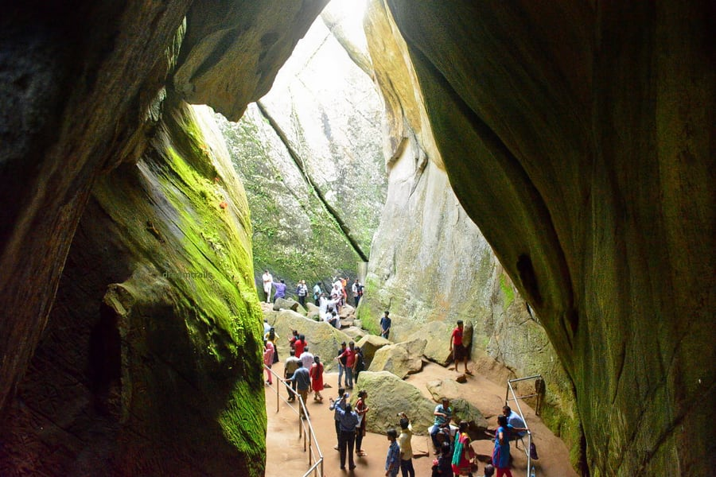

Top destinations in Wayanad
Banasura Sagar Dam, Chembra Peak, Kuruva Island, Edakkal Caves, Chain Tree, Pookode Lake, Tholpetty Wildlife Sanctuary, The Bamboo Factory, Wayanad Wildlife Sanctuary, Soochipara Falls, Phantom Rock, Neelimala View Point and many more.
Places to visit in Wayanad exhibit the most beautiful natural surroundings and offers a surreal respite for the tourists. Known for its enchanting scenery, Wayanad is one of the most mesmerising tourist destinations in Kerala. There are thundering waterfalls, lush greenery, verdant meadows and a number of exotic homestays that lets you have a vacation not to be forgotten any time soon. From historic artefacts to the most mesmerising creations of nature, Wayanad is a splendid destination that one must check off from their bucket list as soon as possible.
A trekking paradise, Chembra is the highest peak in the Wayanad Hill Range that will take your breath away. Encompassed by verdant greenery of the Western Ghats, Chembra Peak is one of those attractions in Wayanad that one just cannot ignore for its mesmerising views and it is one of the famous places to visit in Wayanad in 1 day. It is where the clouds brush your cheeks and your eyes are greeted with solace of calm and quietness in the midst of nature.

One of the most spellbinding places to visit in Wayanad, Banasura Sagar Dam is a picturesque tourist hotspot. Known for being India’s largest earthen dam, it boasts of extensive natural beauty with beautiful flora and fauna, majestic hills and mesmerising waterfalls. The Banasura Sagar is a photographer’s delight and offers the most beautiful views from the top of the hill.

Located in the middle of Kabini river, Kuruva Island is a natural paradise that is replete with diverse flora and fauna in the most beautiful surroundings. It is blessed with evergreen forests all around that makes it a mesmerising picnic spot away from all pollution and noise of the city and it is one of the beautiful places to visit in Wayanad in 1 day.
If you’re browsing for the most serene Wayanad tourist places, Pookode Lake should incite your curiosity. Surrounded by the evergreen beauty of Western Ghats and verdant forests, Pookode Lake is a gorgeous freshwater lake.

Travel back in time to the Stone Age with a visit to Edakkal Caves that are located on the Ambukuthi Hills. Edakkal literally translates to ‘a stone in between’ and this cave and showcases a natural masterpiece and it is one of the famous places to visit in Wayanad.
